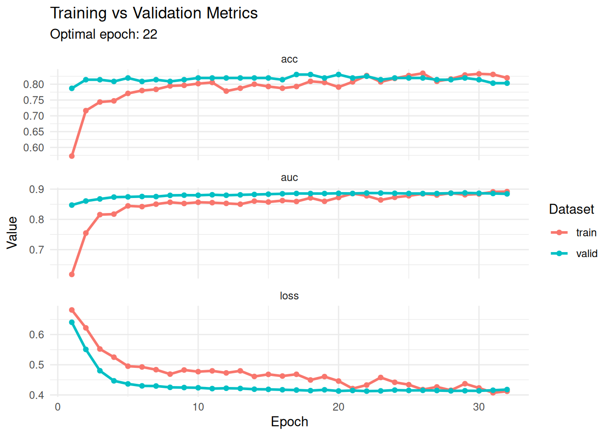
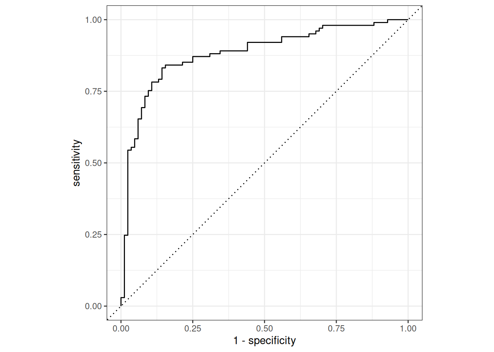
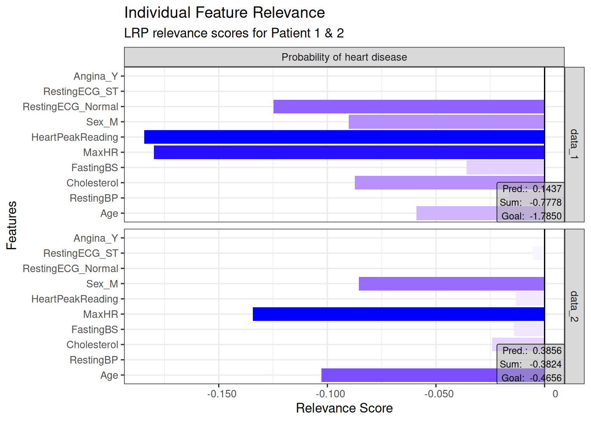
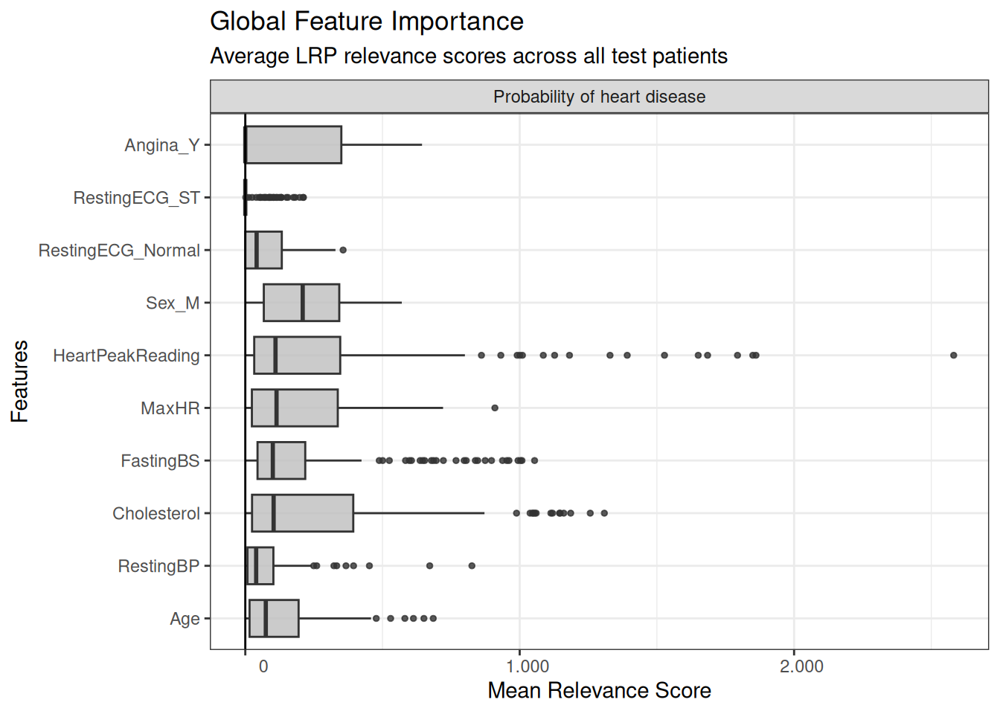
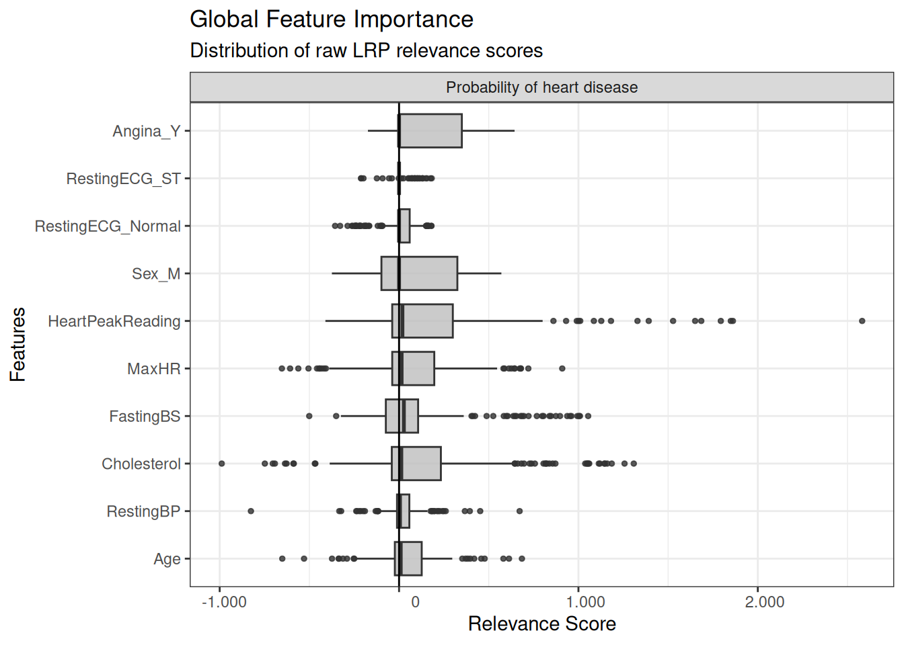

library(torch)
library(luz)
library(tidyverse)
library(tidymodels)
library(MLDataR)
library(innsight)3 Tutorial 3: Deep neural network with explainable method (binary classification)
Aims: To predict heart disease using a deep neural network - To explain model predictions using Layer-wise Relevance Propagation (LRP) - To visualize feature importance at both individual and global levels
Data: heartdisease data from MLDataR package.
Code description: This code demonstrates the use of torch with custom dataset functions, training callbacks, and model explainability using the innsight package for binary classification with LRP.
Packages
Data
heart_df <-
heartdisease %>%
mutate(across(c(Sex, RestingECG, Angina), as.factor))Explore data.
skimr::skim(heart_df)| Name | heart_df |
| Number of rows | 918 |
| Number of columns | 10 |
| _______________________ | |
| Column type frequency: | |
| factor | 3 |
| numeric | 7 |
| ________________________ | |
| Group variables | None |
Variable type: factor
| skim_variable | n_missing | complete_rate | ordered | n_unique | top_counts |
|---|---|---|---|---|---|
| Sex | 0 | 1 | FALSE | 2 | M: 725, F: 193 |
| RestingECG | 0 | 1 | FALSE | 3 | Nor: 552, LVH: 188, ST: 178 |
| Angina | 0 | 1 | FALSE | 2 | N: 547, Y: 371 |
Variable type: numeric
| skim_variable | n_missing | complete_rate | mean | sd | p0 | p25 | p50 | p75 | p100 | hist |
|---|---|---|---|---|---|---|---|---|---|---|
| Age | 0 | 1 | 53.51 | 9.43 | 28.0 | 47.00 | 54.0 | 60.0 | 77.0 | ▁▅▇▆▁ |
| RestingBP | 0 | 1 | 132.40 | 18.51 | 0.0 | 120.00 | 130.0 | 140.0 | 200.0 | ▁▁▃▇▁ |
| Cholesterol | 0 | 1 | 198.80 | 109.38 | 0.0 | 173.25 | 223.0 | 267.0 | 603.0 | ▃▇▇▁▁ |
| FastingBS | 0 | 1 | 0.23 | 0.42 | 0.0 | 0.00 | 0.0 | 0.0 | 1.0 | ▇▁▁▁▂ |
| MaxHR | 0 | 1 | 136.81 | 25.46 | 60.0 | 120.00 | 138.0 | 156.0 | 202.0 | ▁▃▇▆▂ |
| HeartPeakReading | 0 | 1 | 0.89 | 1.07 | -2.6 | 0.00 | 0.6 | 1.5 | 6.2 | ▁▇▆▁▁ |
| HeartDisease | 0 | 1 | 0.55 | 0.50 | 0.0 | 0.00 | 1.0 | 1.0 | 1.0 | ▆▁▁▁▇ |
Dataset function
heart_dataset <- dataset(
initialize = function(df) {
# Pre-process and store as tensors
self$x_num <- df %>%
select(Age, RestingBP, Cholesterol, FastingBS, MaxHR, HeartPeakReading) %>%
mutate(across(everything(), scale)) %>%
as.matrix() %>%
torch_tensor(dtype = torch_float())
self$x_cat <- model.matrix(~ Sex + RestingECG + Angina, data = df)[, -1] %>%
as.matrix() %>%
torch_tensor(dtype = torch_float())
self$y <- torch_tensor(as.matrix(df$HeartDisease), dtype = torch_float())
},
.getitem = function(i) {
list(x = list(self$x_num[i, ], self$x_cat[i, ]), y = self$y[i])
},
.length = function() {
self$y$size(1)
}
)
# Convert to torch dataset
ds_tensor <- heart_dataset(heart_df)
ds_tensor[1]$x
$x[[1]]
torch_tensor
-1.4324
0.4107
0.8246
-0.5510
1.3822
-0.8320
[ CPUFloatType{6} ]
$x[[2]]
torch_tensor
1
1
0
0
[ CPUFloatType{4} ]
$y
torch_tensor
0
[ CPUFloatType{1} ]Split data with dataset subsets
set.seed(123)
n <- nrow(heart_df)
train_size <- floor(0.6 * n)
valid_size <- floor(0.2 * n)
# Create indices
all_indices <- 1:n
train_indices <- sample(all_indices, size = train_size)
remaining_indices <- setdiff(all_indices, train_indices)
valid_indices <- sample(remaining_indices, size = valid_size)
test_indices <- setdiff(remaining_indices, valid_indices)
# Create Subsets
train_ds <- dataset_subset(ds_tensor, train_indices)
valid_ds <- dataset_subset(ds_tensor, valid_indices)
test_ds <- dataset_subset(ds_tensor, test_indices)Convert to dataloader
train_dl <- train_ds %>%
dataloader(batch_size = 10, shuffle = TRUE)
valid_dl <- valid_ds %>%
dataloader(batch_size = 10, shuffle = FALSE)
test_dl <- test_ds %>%
dataloader(batch_size = 10, shuffle = FALSE)Specify the model
net <-
nn_module(
initialize = function(d_in){
self$net <- nn_sequential(
nn_linear(d_in, 32),
nn_relu(),
nn_dropout(0.5),
nn_linear(32, 64),
nn_relu(),
nn_dropout(0.5),
nn_linear(64, 1),
nn_sigmoid()
)
},
forward = function(x){
# x is currently a list of two tensors (numeric and categorical)
# Concatenate them along the feature dimension (dim=2)
input <- torch_cat(x, dim = 2)
self$net(input)
}
)Fit the model
Set parameters
d_in <- length(ds_tensor[1]$x[[1]]) + length(ds_tensor[1]$x[[2]]) # total number of features (6 numeric + 4 categorical = 10)Fit with callbacks
fitted <-
net %>%
setup(
loss = nn_bce_loss(),
optimizer = optim_adam,
metrics = list(
luz_metric_binary_accuracy(),
luz_metric_binary_auroc()
)
) %>%
set_hparams(d_in = d_in) %>%
fit(
train_dl,
epoch = 50,
valid_data = valid_dl,
callbacks = list(
luz_callback_early_stopping(patience = 10),
luz_callback_keep_best_model()
)
)Training plot
fitted %>% plot()
Better plot
hist <- get_metrics(fitted)
optimal_epoch <- hist %>%
filter(metric == "loss", set == "valid") %>%
slice_min(value, n = 1) %>%
pull(epoch)
hist %>%
ggplot(aes(x = epoch, y = value, color = set)) +
geom_line(linewidth = 1) +
geom_point(size = 1.5) +
facet_wrap(~ metric, scales = "free_y", ncol = 1) +
theme_minimal() +
labs(
title = "Training vs Validation Metrics",
subtitle = paste("Optimal epoch:", optimal_epoch),
y = "Value",
x = "Epoch",
color = "Dataset"
)
Predict testing set
y_pred <- fitted %>% predict(test_dl)
y_true <- ds_tensor$y[test_ds$indices] %>% as_array()
dat_pred <-
y_pred %>%
as_array() %>%
as_data_frame() %>%
rename(prob = V1) %>%
mutate(
pred = factor(ifelse(prob > 0.5, 1, 0)),
true = factor(y_true)
)Warning: `as_data_frame()` was deprecated in tibble 2.0.0.
ℹ Please use `as_tibble()` (with slightly different semantics) to convert to a
tibble, or `as.data.frame()` to convert to a data frame.Warning: The `x` argument of `as_tibble.matrix()` must have unique column names if
`.name_repair` is omitted as of tibble 2.0.0.
ℹ Using compatibility `.name_repair`.
ℹ The deprecated feature was likely used in the tibble package.
Please report the issue at <https://github.com/tidyverse/tibble/issues>.dat_pred# A tibble: 185 × 3
prob pred true
<dbl> <fct> <fct>
1 0.0886 0 0
2 0.326 0 0
3 0.0819 0 0
4 0.957 1 1
5 0.0911 0 0
6 0.182 0 0
7 0.311 0 0
8 0.383 0 0
9 0.871 1 0
10 0.102 0 1
# ℹ 175 more rowsEvaluate
fitted %>% evaluate(test_dl)A `luz_module_evaluation`
── Results ─────────────────────────────────────────────────────────────────────
loss: 0.4137
acc: 0.8216
auc: 0.8852Confusion matrix
dat_pred %>%
conf_mat(true, pred) %>%
autoplot("heatmap")
Accuracy
dat_pred %>%
accuracy(truth = true, estimate = pred)# A tibble: 1 × 3
.metric .estimator .estimate
<chr> <chr> <dbl>
1 accuracy binary 0.822Plot ROC
dat_pred %>%
roc_curve(true, prob, event_level = "second") %>%
autoplot()
# ROC-AUC
dat_pred %>%
roc_auc(true, prob, event_level = "second")# A tibble: 1 × 3
.metric .estimator .estimate
<chr> <chr> <dbl>
1 roc_auc binary 0.887Model explainability with LRP
Prepare model for interpretation.
# Extract the sequential model
model <- fitted$model$net$cpu()
# Define input and output names
input_names <- c(
# Numeric variables
"Age", "RestingBP", "Cholesterol", "FastingBS", "MaxHR", "HeartPeakReading",
# Categorical dummies (from model.matrix ~ .-1)
"Sex_M", "RestingECG_Normal", "RestingECG_ST", "Angina_Y"
)
output_names <- c("Probability of heart disease")Create converter and prepare test data.
# Create the Converter object
converter <- convert(
model,
input_dim = 10,
input_names = input_names,
output_names = output_names
)Skipping nn_dropout ...
Skipping nn_dropout ...# Manually extract and concatenate the test data
idxs <- test_ds$indices
x_num <- ds_tensor$x_num[idxs, ]
x_cat <- ds_tensor$x_cat[idxs, ]
# Combine into one tensor and convert to R array
input_tensor <- torch_cat(list(x_num, x_cat), dim = 2)
input_data <- as_array(input_tensor)Apply Layer-wise Relevance Propagation (LRP).
# Run LRP with alpha-beta rule
lrp_result <- run_lrp(converter, input_data, rule_name = "alpha_beta", rule_param = 1)
# Check dimensions: Instances x Features x Outputs
dim(get_result(lrp_result))[1] 185 10 1Individual explanations.
# Individual plots for the first two test instances
plot(lrp_result, data_idx = c(1, 2)) +
theme_bw() +
coord_flip() +
labs(
title = "Individual Feature Relevance",
subtitle = "LRP relevance scores for Patient 1 & 2",
x = "Features",
y = "Relevance Score"
)
Global explanations.
# Global boxplot - overall feature importance across the entire test set
boxplot(lrp_result) +
theme_bw() +
coord_flip() +
labs(
title = "Global Feature Importance",
subtitle = "Average LRP relevance scores across all test patients",
x = "Features",
y = "Mean Relevance Score"
)
Global explanation with raw relevance scores.
# Another version of global boxplot with identity transformation
boxplot(lrp_result, preprocess_FUN = identity) +
theme_bw() +
coord_flip() +
labs(
title = "Global Feature Importance",
subtitle = "Distribution of raw LRP relevance scores",
x = "Features",
y = "Relevance Score"
)